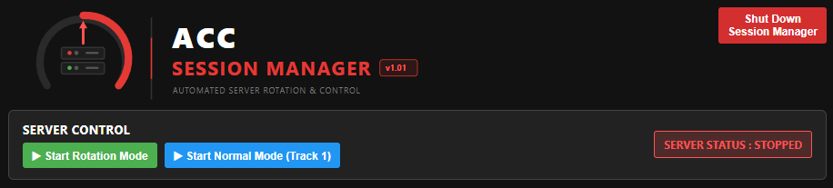
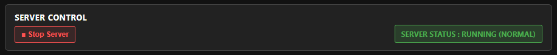
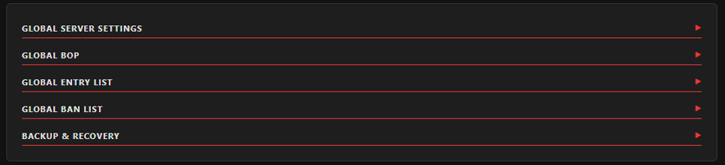
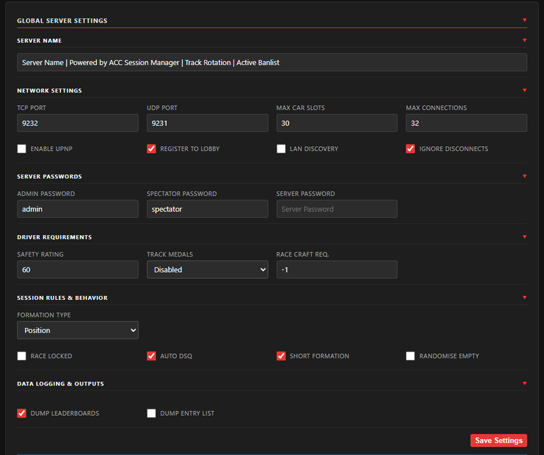
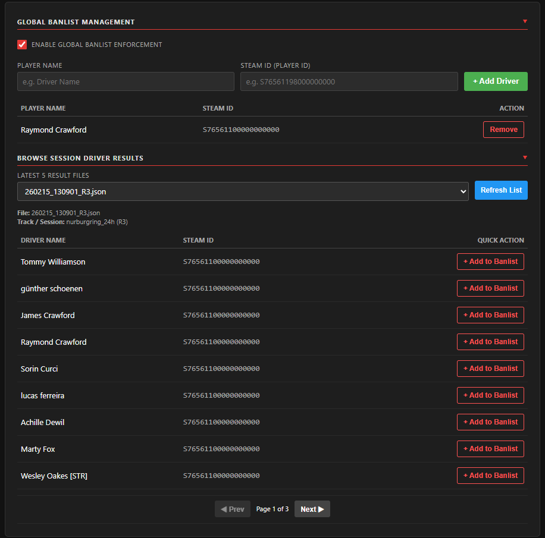
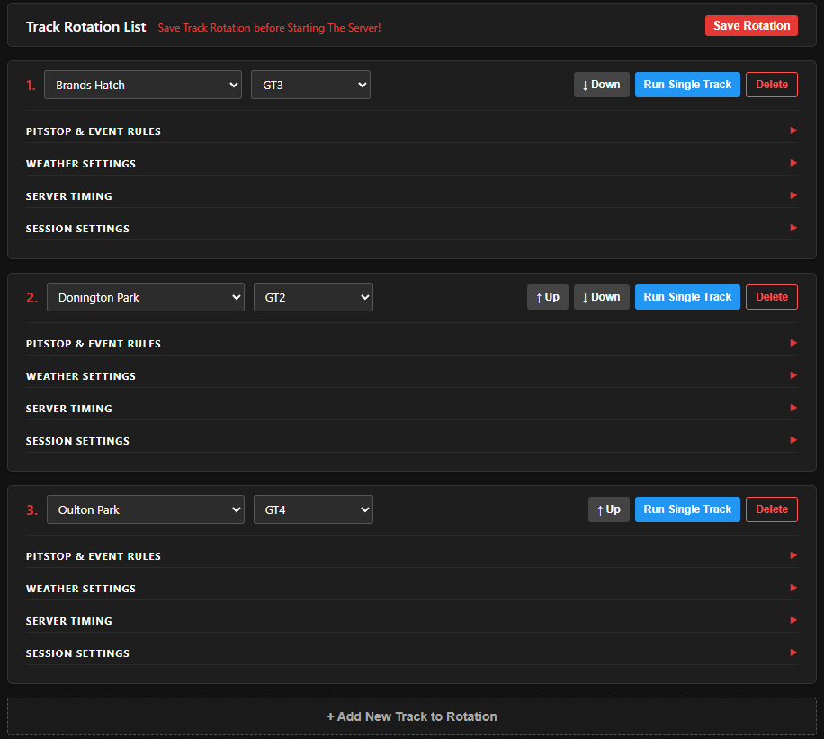
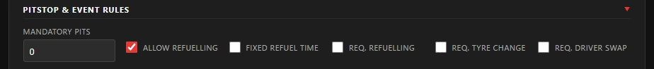
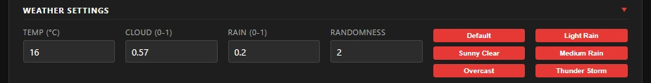
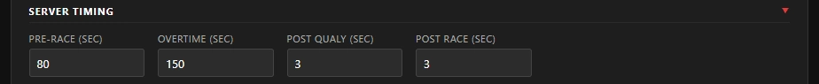
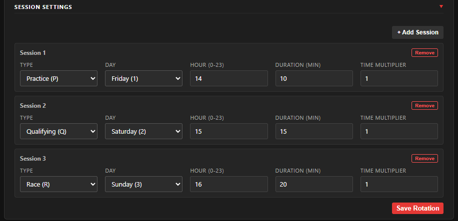

Application Features
- Active Ban List.
- Live Track Queueing.
- Automatic Track Rotation.
- Easy Session Management.
- Modern ui and easy to use.
- Weather Presets for each Session.
Quick Start Guide
Installation
- 1. Avoid Windows OS Folders like documents, pictures etc that could be synced with services such as onedrive.
- 2. Move the ACC-SessionManager Folder into a suitable location where you want to run it from.
- - Example:
C:/Apps/ACC-SessionManager or D:/ACC-SessionManager etc..
Setup & Configuration
- 1. Launch ACC-SessionManager.exe
- 2. Configure the server using the global server settings.
- 3. You can close the gui once the ACC Session Manager is Running
- - Run ACC-SessionManager again to view the gui.
- 4. Its recommended to add the gui to your browser bookmarks.
Network Access
- 1. ACC Session Manager uses the Kunos Dedicated Server
server/accServer.exe
- 2. Setup the udp and tcp game ports in the gui.
- 3. Start the Server in the gui and allow accServer.exe both Private and Public.
- 4. Configure your router to allow the incoming game ports you set in the gui.
ACC Session Manager
ACC Server Control
- Start and Stop the Server in Rotation Mode or Normal Operation Mode.
- The Server Status Indicator will turn Green when the Server is Running.
- Close the Browser to continue running the session manager.
- You can Start ACC-SessionManager to view the gui.
- Its recommended to add the gui to your browser bookmarks.
- You can Shutdown the ACC Session Manager using the Gui.


Global Server Settings - Overview
- Select & Configure the Global Server Settings.
- Expand Each Section to set the relevant settings.

Global Settings Expanded...

Global Ban List
- Enable or Disable the Global Ban List.
- Add Player Name and Steam ID to apply a Permanent Ban.
- Browse the lastest Result files to find Players.
How To Ban a Player
- Use the /ban Admin Command ingame to Ban the Player from the session.
- View the Latest Session Results & Add the Player to Banlist.
- Or Manually Add the Player Name and Steam ID.
- When the Server Restarts The Player will be Banned.
(Permanent Ban applies until the Player is Removed from the Banlist.)

Track Rotation - Overview
- Select the Track and Car Class for the Session.
- Expand Each Section to set the relevant settings for each race.
- Re-Order or Delete Tracks in the Rotation List.
- Add Tracks to the List with the
[+ Add new Track to Rotation] button below.
- Live Queue - Add New Tracks while the server is Running to add them to the queue.
- Run Single Track - Start the server in normal operation mode using this track.

Session Settings Expanded...
Pitstop & Event Rules
- Configure the Required Pitstop Settings for the Session.

Weather Presets
- Select a Weather Preset for the Session.
- Or Use the Inputs to Set Custom Weather (0.00 - 0.1)

Server Timing
- Pre-Race Time (Grid Time) should be atleast 1:20 secs.
- Nordschleife will Require a High Overtime of 540 secs.
- 150 secs Overtime is default to Cover Spa Francorchamps.
- Keep Post Qualy and Post Race a low value (under 10 secs).

Session Settings
- Define your Session Type, Weekend Day, Hour of Day, Duration & Time Muliplier.
- Use the + Add Session and Remove Buttons to add or remove Sessions.
- Save Rotation to commit the Session to the Queue.

Entry List & Balance of Performance
- Copy your entrylist.json to the server/cfg folder.
- Copy your bop.json to the server/cfg folder.
- Replace files if asked.